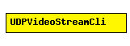

File: Applications/UDPApp/UDPVideoStreamCli.ned
C++ definition: click here
Video streaming client.
See also: UDPVideoStreamSvr
The following diagram shows usage relationships between modules, networks and channels. Unresolved module (and channel) types are missing from the diagram. Click here to see the full picture.
| Name | Type | Description |
|---|---|---|
| localPort | numeric | |
| serverAddress | string | |
| serverPort | numeric | |
| startTime | numeric |
| Name | Direction | Description |
|---|---|---|
| from_udp | input | |
| to_udp | output |
simple UDPVideoStreamCli parameters: localPort: numeric, serverAddress: string, serverPort: numeric, startTime: numeric; gates: in: from_udp; out: to_udp; endsimple